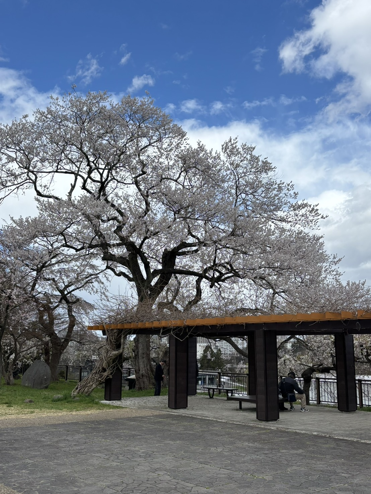
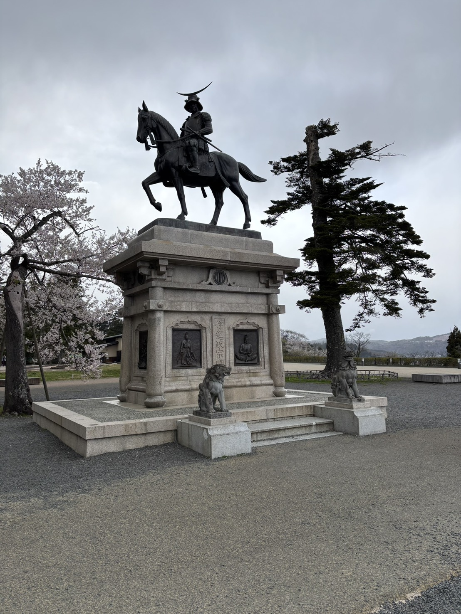

2025年4月16日
お花見
本日16日、物性理論グループのお花見が開催された。このお花見をもって、博士課程2年目がスタートしたのだなと、改めて実感する。

このブログを書いている今は、すでに花見会場を後にして、研究室の居室に戻ってきている。この後に開かれる二次会までの、時間潰しのような会が続いているが、お酒を飲まない自分は、細々とこのブログを書いている。
花見会場を出た後は、同グループの先輩・後輩と一緒に、仙台城跡にある伊達政宗公の騎馬像を見に行った。仙台と聞くと、まずこの騎馬像を思い浮かべる人も多いのではないだろうか。騎馬像のある本丸跡からは、仙台市内を一望できる。街並みの向こうまで広がる景色は開放感があり、仙台を訪れた際にはぜひ見てほしい絶景である。

私は、自然豊かな環境に囲まれた仙台での研究生活を、とても気に入っている。仙台は東北地方を代表する都市であり、仙台駅周辺には商業施設や飲食店が集まっているため、日常生活で不便を感じることはない。一方で、街の中心部から少し移動すると、すぐに豊かな自然に触れることができる。この「都市としての便利さ」と「自然の近さ」が共存しているところが、仙台の大きな魅力だと思う。
私の居室がある青葉山キャンパスも、木々に囲まれた緑深い場所にある。空気が澄んでいて、キャンパス内を少し歩くだけでもよい気分転換になる（くまに注意！🐻）。
私自身、午後になって集中力が切れてきたときや、研究が思うように進まず気分が落ち込んだときには、いったん建物の外に出て、青葉山キャンパスを散策することがある。緑の中を歩きながら研究とは別のことを考えていると、頭の中が整理される。
研究生活では、長い時間机に向かい続けるだけでなく、適度に気持ちを切り替えられる環境も大切である。その意味でも、便利な街と豊かな自然の両方が身近にある仙台は、研究に集中しながら充実した生活を送ることのできる、とても恵まれた場所だと感じている。